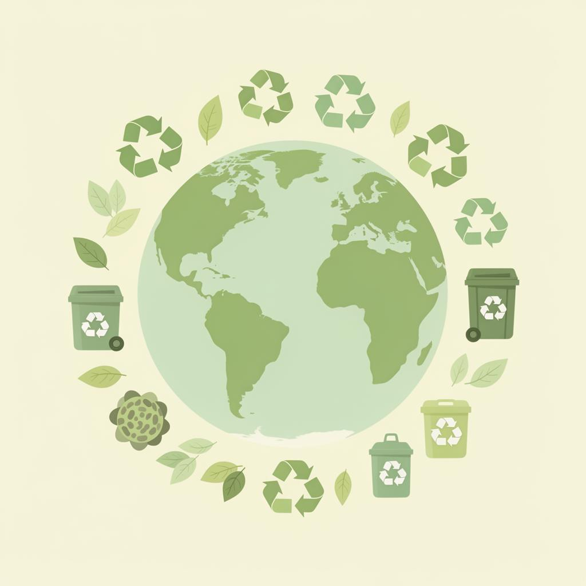

Recicláveis
Papel, plástico, metal e vidro que podem ser reciclados.

Descubra como descartar corretamente e encontre locais de coleta. Pesquise pelo nome do material ou descreva o que você precisa.
Encontre orientações simples para dar o destino certo ao seu resíduo.
Escreva do seu jeito, por exemplo: “onde levo uma pilha usada?”
Conheça os principais tipos de resíduos e saiba como descartá-los corretamente.
Papel, plástico, metal e vidro que podem ser reciclados.
Restos de comida e materiais biodegradáveis para compostagem.
Pilhas, baterias, lâmpadas e produtos químicos.
Computadores, celulares e equipamentos elétricos.
Óleo de cozinha, tintas e solventes usados.
Móveis, colchões e materiais de construção.
Em três passos simples, descubra a forma correta de descartar qualquer resíduo.
Digite o nome do item que deseja descartar ou navegue pelas categorias.
O guia mostra como preparar o material, os cuidados e onde entregá-lo.
Agende sua visita a um ponto de coleta e contribua para um planeta mais limpo.
Encontre os locais mais perto de você para descartar seus resíduos corretamente e agende sua visita.
Seus horários confirmados ficam salvos neste navegador.